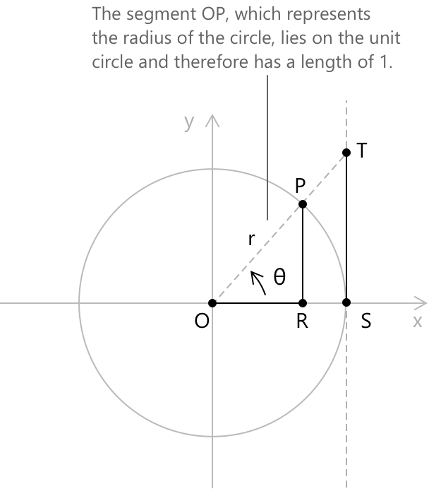
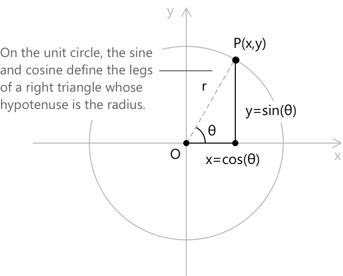
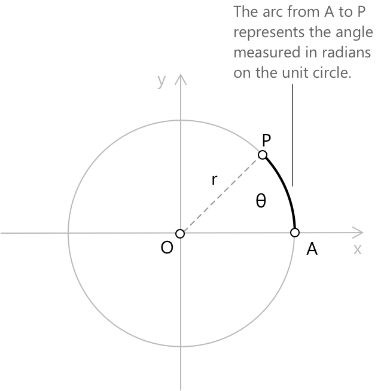
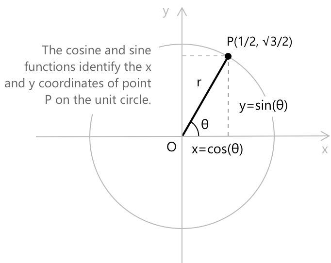

Одиничне коло
Означення
Одиничне коло, яке також називають тригонометричним колом, — це коло радіусом один з центром у початку координат Декартової площини. Воно слугує геометричним орієнтиром для представлення кутів та їхнього положення, забезпечуючи точний спосіб опису обертання, орієнтації та взаємозв'язку між точками на колі при зміні кута. Розглянемо коло одиничного радіуса з центром у початку координат \( O \), і нехай \( P \) буде точкою на колі. Відрізок \( \overline{OP} \), який має довжину один, утворює кут \( \theta \) з позитивною віссю \( x \), а \( R \) позначає основу перпендикуляра, опущеного з \( P \) на вісь \( x \).

За домовленістю, напрямку проти годинникової стрілки присвоюється позитивний знак, а напрямку за годинниковою стрілкою — негативний знак. Отже, кут \( \theta \) є позитивним, коли точка \( P \) досягається рухом проти годинникової стрілки від позитивної осі \( x \), і негативним в іншому випадку. Нехай \( S \) буде точкою \( (1, 0) \), де одиничне коло перетинає позитивну вісь \( x \), і нехай \( T \) буде точкою, де пряма, що проходить через \( O \) та \( P \), перетинає вертикальну дотичну до кола в точці \( S \).
Основна тригонометрична тотожність
Після того як поняття синуса та косинуса були введені через геометрію одиничного кола, їхній взаємозв'язок стає особливо прозорим. Якщо точка \( P \) лежить на одиничному колі та відрізок \( \overline{OP} \) утворює кут \( \theta \) з позитивною віссю \( x \), то прямокутний трикутник з вершинами в \( O \), \( R \) та \( P \) має гіпотенузу довжиною \( 1 \), горизонтальний катет довжиною \( \cos\theta \) та вертикальний катет довжиною \( \sin\theta \). Застосування теореми Піфагора до цього трикутника дає наступну тотожність: \[ \sin^2\theta + \cos^2\theta = 1 \]

Цей зв'язок виконується для кожного кута \( \theta \), незалежно від положення \( P \) на колі. В аналітичному сенсі це виражає той факт, що точка \( (\cos\theta, \sin\theta) \) завжди лежить на одиничному колі, рівняння якого має наступний вигляд:
\[ x^{2} + y^{2} = 1 \]
З іншого боку, кожна точка на одиничному колі може бути записана у вигляді \( (\cos\theta, \sin\theta) \) для деякого кута \( \theta \), що є параметричним представленням кола.
Кути на одиничному колі
Розглянемо точку \( P \) на одиничному колі. Її положення однозначно визначається кутом \( \theta \), що утворюється між позитивною віссю \( x \) та відрізком \( \overline{OP} \), де \( O \) позначає початок координат. Кут вимірюється проти годинникової стрілки від позитивної осі \( x \) згідно зі стандартною домовленістю.
Кути зазвичай виражаються в градусах відповідно до шістдесяткової системи, в якій повний оберт відповідає \( 360^\circ \). Оскільки коло є замкненою кривою, обертання на \( 360^\circ \) повертає точку \( P \) у її початкове положення, тому кути природним чином визначаються за модулем \( 360^\circ \). У результаті значення, що перевищують \( 360^\circ \), представляють обертання, що включають один або кілька повних обертів, тоді як від'ємні значення вказують на обертання за годинниковою стрілкою. Наприклад:
- \( 450^\circ \) представляє один повний оберт (\( 360^\circ \)) плюс додаткові \( 90^\circ \).
- \( -90^\circ \) відповідає чверть-оберту в напрямку за годинниковою стрілкою.
Довжина дуги та радіани
Нехай \( A \) — точка перетину позитивної \( x \)-осі з одиничним колом, а \( P \) — будь-яка точка на одиничному колі. Точка \( P \) може бути однозначно визначена довжиною дуги від \( A \) до \( P \), виміряною проти годинникової стрілки вздовж одиничного кола.

Максимальна довжина такої дуги, що відповідає повному оберту, становить \( 2\pi \). Як і у випадку з градусами, довжини дуг, більші за \( 2\pi \), представляють кілька повних обертів, тоді як від'ємні значення відповідають руху за годинниковою стрілкою.
Ця довжина дуги називається радіанною мірою кута \( \angle AOP \), і, оскільки оберти є періодичними, вона визначається за модулем \( 2\pi \). Щоб перевести кут із градусів у радіани, потрібно помножити його градусну міру на коефіцієнт \( \pi/180 \). Наприклад, кут \( \theta = 30^\circ \) відповідає наступній радіанній мірі: \[ \theta = 30 \times \frac{\pi}{180} = \frac{\pi}{6} \]
Декартові координати та параметричний виклад
Одиничне коло має природний параметричний виклад у декартовій системі координат. Будь-яка точка \( P \) на колі однозначно визначається кутом \( \theta \), що утворюється між позитивною \( x \)-оссю та відрізком \( \overline{OP} \). Коли \( \theta \) змінюється в межах \( [0, 2\pi) \), точка \( P \) описує коло рівно один раз, і ця відповідність виражається наступними параметричними рівняннями: \[ \begin{align} x &= \cos\theta \\[6pt] y &= \sin\theta \\[6pt] \end{align} \] Якщо дозволити \( \theta \) змінюватися по всій множині \( \mathbb{R} \), одна й та сама точка може бути досягнута кілька разів, що відображає періодичність тригонометричних функцій. Підставляючи параметричні вирази в рівняння \( x^2 + y^2 = 1 \), ми відновлюємо основну тригонометричну тотожність \( \sin^2\theta + \cos^2\theta = 1 \), що підтверджує, що кожна точка такого вигляду лежить на одиничному колі.

Як приклад, розглянемо кут \( \theta = \pi/3 \). Параметричні рівняння дають наступні значення:
\[\cos\frac{\pi}{3} = \frac{1}{2}\] \[\sin\frac{\pi}{3} = \frac{\sqrt{3}}{2}\]
Відповідна точка на одиничному колі, отже, має вигляд: \[ P\!\left(\frac{1}{2},\, \frac{\sqrt{3}}{2}\right) \]
Можна безпосередньо перевірити, що:
\[ \left(\frac{1}{2}\right)^2 + \left(\frac{\sqrt{3}}{2}\right)^2 = \frac{1}{4} + \frac{3}{4} = 1 \]
Періодична природа параметризації
Параметричний виклад одиничного кола відображає фундаментальну властивість тригонометричних функцій: оскільки коло є замкненою кривою, виконання повного оберту на \( 2\pi \) радіан повертає точку \( P \) у її початкове положення. Як наслідок, додавання будь-якого цілого кратного \( 2\pi \) до кута \( \theta \) залишає відповідну точку на колі незмінною. Це виражається наступною тотожністю:
\[ (\cos(\theta + 2k\pi),\, \sin(\theta + 2k\pi)) = (\cos\theta,\, \sin\theta) \]
для кожного цілого \( k \in \mathbb{Z} \). Зокрема, це означає, що параметризація за \( \theta \in \mathbb{R} \) не є ін'єктивною: безліч значень \( \theta \) відповідають одній і тій самій точці на колі, і бієктивна відповідність відновлюється лише шляхом обмеження \( \theta \) інтервалом довжиною \( 2\pi \), таким як \( [0, 2\pi) \).
Ця періодична поведінка є визначальною властивістю синуса та косинуса, які успадковують її безпосередньо з геометрії одиничного кола.
Помітні кути та їхні координати
Певні кути природним чином виникають із геометрії одиничного кола і зустрічаються в усій тригонометрії. Для цих кутів значення синуса та косинуса можуть бути визначені точно за допомогою елементарних геометричних аргументів, без наближень. У наступній таблиці наведено відповідні координати \( (\cos\theta, \sin\theta) \) для найпоширеніших кутів.
\[ \begin{align} \theta &= 0 &\quad& \cos 0 = 1 &\quad& \sin 0 = 0 \\[6pt] \theta &= \frac{\pi}{6} &\quad& \cos\frac{\pi}{6} = \frac{\sqrt{3}}{2} &\quad& \sin\frac{\pi}{6} = \frac{1}{2} \\[6pt] \theta &= \frac{\pi}{4} &\quad& \cos\frac{\pi}{4} = \frac{\sqrt{2}}{2} &\quad& \sin\frac{\pi}{4} = \frac{\sqrt{2}}{2} \\[6pt] \theta &= \frac{\pi}{3} &\quad& \cos\frac{\pi}{3} = \frac{1}{2} &\quad& \sin\frac{\pi}{3} = \frac{\sqrt{3}}{2} \\[6pt] \theta &= \frac{\pi}{2} &\quad& \cos\frac{\pi}{2} = 0 &\quad& \sin\frac{\pi}{2} = 1 \\[6pt] \theta &= \pi &\quad& \cos\pi = -1 &\quad& \sin\pi = 0 \\[6pt] \theta &= \frac{3\pi}{2} &\quad& \cos\frac{3\pi}{2} = 0 &\quad& \sin\frac{3\pi}{2} = -1 \end{align} \]
Значення при \( \theta = \pi/4 \) випливають із того факту, що рівнобедрений прямокутний трикутник, вписаний в одиничне коло, має рівні катети, тому \( \cos(\pi/4) = \sin(\pi/4) \), і спільне значення дорівнює \( \frac{\sqrt{2}}{2} \). Значення при \( \theta = \pi/6 \) та \( \theta = \pi/3 \) виводяться з геометрії рівностороннього трикутника, всі кути якого дорівнюють \( \pi/3 \).
Одиничне коло та комплексні числа
Одиничне коло має природну інтерпретацію в контексті комплексних чисел. Нагадаємо, що комплексне число \( z = x + iy \) може бути представлене як точка \( (x, y) \) на декартовій площині. Модуль \( z \) визначається як \( |z| = \sqrt{x^2 + y^2} \), отже, умова \( |z| = 1 \) описує саме множину комплексних чисел, що лежать на одиничному колі. За допомогою параметричного представлення, встановленого вище, кожне таке число можна записати у вигляді:
\[ z = \cos\theta + i\sin\theta \]
для деякого кута \( \theta \). Цей вираз збігається з показниковою формою комплексного числа, що задається формулою Ейлера:
\[ e^{i\theta} = \cos\theta + i\sin\theta \]
Таким чином, одиничне коло — це множина всіх комплексних чисел вигляду \( e^{i\theta} \), де \( \theta \) набуває значень з \( \mathbb{R} \), або, що еквівалентно, множина \( {z \in \mathbb{C} : |z| = 1} \). Множення двох таких чисел геометрично відповідає повороту: якщо \( z_1 = e^{i\alpha} \) та \( z_2 = e^{i\beta} \), то \( z_1 z_2 = e^{i(\alpha+\beta)} \), що є точкою, отриманою шляхом повороту \( z_1 \) на кут \( \beta \). Ця геометрична інтерпретація лежить в основі як теореми де Муавра, так і вивчення коренів одниці.